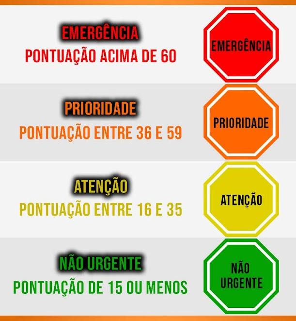

<div class="container container__score">
  <mat-card class="card">
    <p class="mat-headline-5">
      {{ data.nome | uppercase }} , analisando suas respostas
    </p>
    <p class="mat-headline-5">A soma total das sua respostas é</p>
    <p class="mat-headline-3">{{ data.resultado }}</p>
    <p>
      Pegue o total das suas resposta e veja na imagem a baixo qual o nível da
      sua ansiedade.
    </p>
    <p>
      -> Se o total deu <strong>acima de 60</strong> você precisa
      <strong> cuidar urgentemente da sua Ansiedade.</strong>
    </p>
    <p>
      -> Se o total deu <strong>de 36 a 59</strong> você precisa
      <strong> cuidar urgentemente da sua Ansiedade.</strong>
    </p>
    <p>
      -> Se o total deu <strong>de 16 a 35</strong> você precisa olhar com
      <strong> atenção para sua Ansiedade.</strong>
    </p>
    <p>
      -> Se o total deu <strong>menos que 15</strong> você saber que
      <strong> tem pouca de Ansiedade.</strong>
    </p>
    <p>
      -> Se o total deu <strong>ZERO</strong>, parabéns você tem o domínio total
      da sua vida e ansiedade não faz parte do seu dia a dia.
    </p>
    
  </mat-card>
</div>
